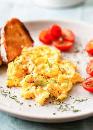

Home
SCRAMBLED-EGGS

Description
Scrambled eggs are a quick and easy breakfast classic made with just a few
simple ingredients.
Soft, fluffy, and delicious, they are perfect on their own or served with
toast and vegetables.
Ingredients
- Eggs
- Milk or cream
- Butter
- Salt
- Black pepper
Steps
- Crack the eggs into a bowl and whisk with milk, salt, and pepper.
- Heat butter in a non-stick pan over medium-low heat.
- Pour in the eggs and let them sit briefly.
- Gently stir until soft curds form.
- Remove from heat and serve immediately.